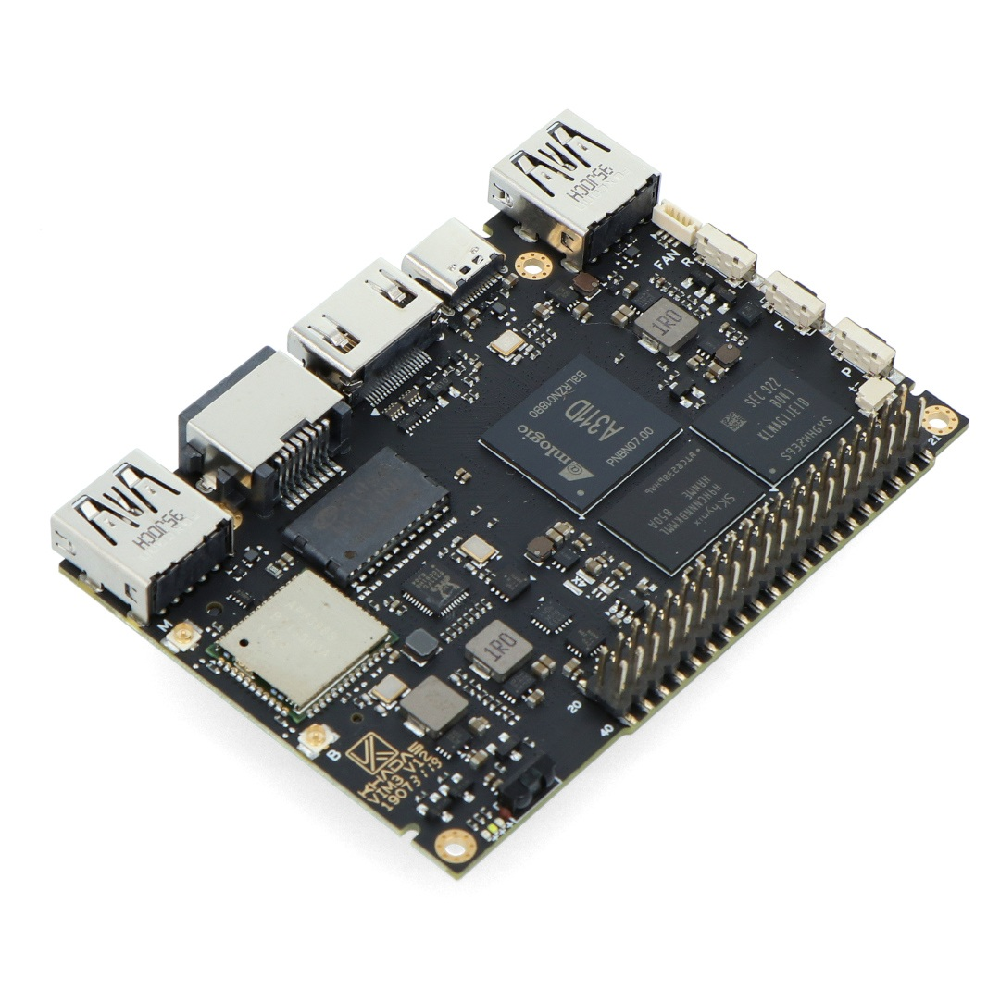
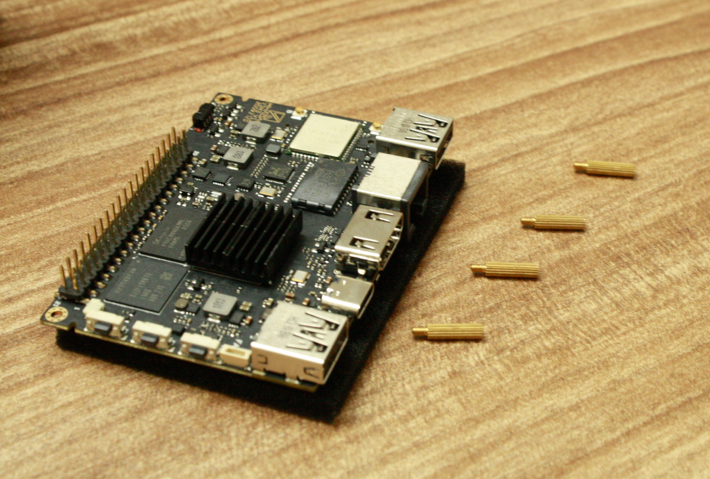
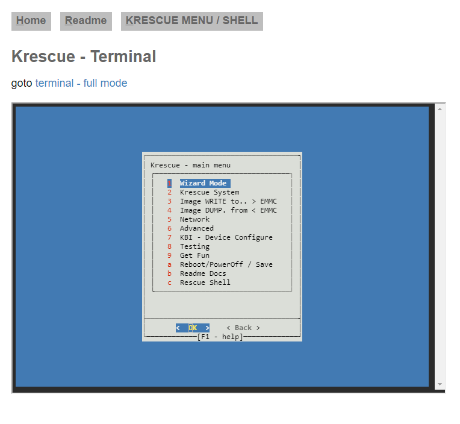

Getting started with clustering
part 1:
Introduction:
Its always has been my wish to build my own SBC cluster, and its finally a reality!
in this article I'll explain what were my steps to setup and build my own super powered SBC cluster
Getting started:
to build a cluster we need to select our choice of processing media and various components to interconnect the system.
I chose the VIM3 as the brains of the operation/s

I've been using the VIM3 for about 2 years now, and these is nothing as fast that does wonders without breaking a sweat,
I'll be using the VIM3s in a 4+1 configuration where 1 VIM3 controls the other 4 VIM3s
the net resources in this cluster (excuding the master node) is:
24 cores12 GB of RAM
this insane amount of resources will allow us to some intense things
but what is a cluster without the literal fabric that connects it all ?
The essentials:

The four horsemen of connecting it all
the 4 main things we need for connecting it all together include:
the gigabit ethernet switch is the literal bread and butter of the entire operation, allowing high speed communication between all the various nodes connected to it.
the charger is a branded version of the generic HDS-HDD10T charger, it provides 60w of power distributed among 6 individual USB ports, allowing us to power up the system without any power deficiency
the cables also play a vital role as they help to connect everything together the USB cables were plain braided USB-C to USB-A and the ethernet cables were 1 meter long patch cables which were CAT6 compliant.
Building the cluster:
except the master node, each node was fitted with a small heatsink to help dissipate heat, and was stacked with pairs of M2 standoffs

putting it together piece by piece
all such nodes were given standoffs and stacked up to finally give a tower of SBCs

the tower of power
the nodes are well spaced to allow for good airflow during passive cooling.
the top most node which is the master node which controls all the other
nodes is fitted with a passive heatsink from khadas, and acts as the
endcap for the standoff heads and also gives the extra necessary cooling
for the master node which will have to manage all other devices
setting up some initial software...
for the cluster we need to setup all the nodes to run linux, the simple approach I took to do this seamlessly is using Krescue
one node at a time can be fitted with a thumbdrive containing krescue and the necessary firmware file and connected to the computer to open up the krescue web console and flash the firmware

my choice of firmware was the stock Arch image install via krescue scripts,
running the mainline kernel, this would mean I'd be getting the up to date
software and latest optimizations available, kudos to @Artem from khadas
for creating these amazing scripts!
Arch linux is very lightweight, fast to boot, and is very vanilla (apart
from being a bit difficult to setup if you are an linux beginner)
cable management:
much work was done to organize the extra lengthy cables I used here, if
you were to attempt this you could get away with some smaller patch cables
for less of a mess.
extensive usage of twist ties and braiding was done to maintain the
seamless flow of the cables
what's next ?:
in the next part I'll be exploring some of the software I used to setup
the cluster this includes things like passwordless SSH functionality,
various software for running code with the power of all the clusters etc.
Part 2:
setting up the software:
our first thing on the agenda of software management will be to make sure
we have SSH keys enabled for each of the nodes so that we can have
passwordless access to each node from the master node.
we first want to figure out which IP address of the various nodes, but
since we don't know one node from another we want to change the host name
of the cluster on the master node
we first power up the master node (the one on top with the bigger heatsink,
and change the host name, this can be done with
sudo nano /etc/hostname and changing the default name to whatever we
prefer, I named my cluster orchid
after that we can reboot the vim and power up all the nodes and login to
my router to see the attached devices and their various names, its much
easier to spot the master node among the other nodes, since I initially
know the IP address of my master node from previously sshing into it, I
only need to remember the IP address of the other nodes
usually I would need to setup a static IP address but since the image was
preconfigured to set its own IP, I didn't meddle with that.
I opened up a corresponding number of SSH terminals to my master node from
my main computer equal to the number of other nodes on the network (which
in my case was 5 other nodes)
after that I ran ssh-keygen and gave enter without any data input to
make sure I would have a passwordless entry.
after that I run ssh-copy-id <ip-of-a-node> for each node on each
terminal after which I run ssh <ip-of-a-node> on each terminal for each
node and run updates (sudo pacman -Syu) to bring all
the nodes up to date
we will first install mpich and python3-mpi4py from the pacman package
manager (sudo pacman -S mpich python3-mpi4py), this will allow us to
run commands simulatneously when needed in the future like for example
updates and necessary packages etc.
and just like that the initial software setup is complete for the cluster.
optionally you can set individual hostnames for each of the various nodes.
What's next ?:
In the next part I'll be running some example code to show the cluster
using its computational resource. we can compare these numbers to show how
fast it is compared to other various devices like an Individual VIM and
another Rasberry pi cluster.